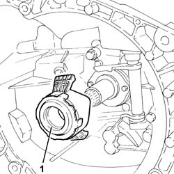
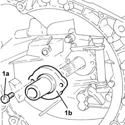

2110C24 seals for gearbox input shaft - r r for manual gearbox with hydraulic selection versions
- Path
- Procedures > 21 GEARBOX > 2110 MANUAL GEARBOX AND DIFFERENTIAL > 2110C gear cases and covers of manual gearbox with differential > 2110C24 seals for gearbox input shaft - r r for manual gearbox with hydraulic selection versions
- Kind
- repair procedure (removal / refitting; the operation number is the code)
- Applies to
- engines: 2.0 TS; all production periods
- Interactive page
- https://sloeber94.github.io/elrnDB-a147/en/#/3025126
Applies to: engines: 2.0 TS; all production periods; only with equipment: Cambio robotizzato
 Removing
Removing
 Refitting
RefittingPosition the vehicle on the ramp.
Proceed with the removal 5530B10 battery - r+r .
Proceed with the removal 5530B52 Battery DRIP TRAY/SUPPORT - R.R. .
Proceed with the removal 4450B12 front or rear wheels (two) - r+r .
Proceed with the removal 7055B64 Engine compartment DUST shield in front wheel arch (one), left or right - R.R. (Right and left sides).
Proceed with the removal 7055B42 Additional FRONT WHEEL ARCH (one), left or right - R.R. (Right and left sides).
Proceed with the removal 7055B54 under-engine guard - r r .
Proceed with the removal 2127C40 hydraulic speed selection hydraulic actuator unit and clutch - r r .
Proceed with the removal 1016A40 ignition coil cover on cylinder head- r+r .
Proceed with the removal 1072C44 exhaust manifold heat shield on bulkhead - r+r .
Proceed with the removal 2110A11 manual gearbox with differential - r r for versions with hydraulic selection .
1. Rotate the thrust bearing in a clockwise direction and remove it.

Applies to: engines: 2.0 TS; all production periods; only with equipment: Cambio robotizzato
1. Undo the bolts (1a) and remove the cover incorporating the gasket for the gearbox input shaft (1b).

Applies to: engines: 2.0 TS; all production periods; only with equipment: Cambio robotizzato
Refitting
RemovingPlace the cover incorporating the gasket for the gearbox input shaft back in its housing and secure it using the bolts.
Place the thrust bearing back in its housing.
Proceed with the refitting 2110A11 manual gearbox with differential - r r for versions with hydraulic selection .
Proceed with the refitting 1072C44 exhaust manifold heat shield on bulkhead - r+r .
Proceed with the refitting 1016A40 ignition coil cover on cylinder head- r+r .
Proceed with the refitting 2127C40 hydraulic speed selection hydraulic actuator unit and clutch - r r .
Refill the manual gearbox and differential 2110A04 Manual gearbox and differential OIL - Check level and top up, if necessary .
Proceed with the refitting 7055B54 under-engine guard - r r .
Check the level of the fluid in the electro-hydraulic selection gearbox and, top it up, if necessary 2127C04 ELECTROHYDRAULIC selection gearbox hydraulic system FLUID - Check level and top up if necessary. .
Bleed the air from the electro-hydraulic selection gearbox hydraulic system 2127C06 Electro-hydraulic selection manual gearbox HYDRAULIC SYSTEM - Bleeding air .
Proceed with the refitting 7055B42 Additional FRONT WHEEL ARCH (one), left or right - R.R. (Right and left sides).
Proceed with the refitting 7055B64 Engine compartment DUST shield in front wheel arch (one), left or right - R.R. (Right and left sides).
Proceed with the refitting 4450B12 front or rear wheels (two) - r+r .
Proceed with the refitting 5530B52 Battery DRIP TRAY/SUPPORT - R.R. .
Proceed with the refitting 5530B10 battery - r+r .
Remove the car from the ramp.
Topics linked from this page (13)
- 1016A40 ignition coil cover on cylinder head- r+r
- 1072C44 exhaust manifold heat shield on bulkhead - r+r
- 2110A04 Manual gearbox and differential OIL - Check level and top up, if necessary
- 2110A11 manual gearbox with differential - r r for versions with hydraulic selection
- 2127C04 ELECTROHYDRAULIC selection gearbox hydraulic system FLUID - Check level and top up if necessary.
- 2127C06 Electro-hydraulic selection manual gearbox HYDRAULIC SYSTEM - Bleeding air
- 2127C40 hydraulic speed selection hydraulic actuator unit and clutch - r r
- 4450B12 front or rear wheels (two) - r+r
- 5530B10 battery - r+r
- 5530B52 Battery DRIP TRAY/SUPPORT - R.R.
- 7055B42 Additional FRONT WHEEL ARCH (one), left or right - R.R.
- 7055B54 under-engine guard - r r
- 7055B64 Engine compartment DUST shield in front wheel arch (one), left or right - R.R.